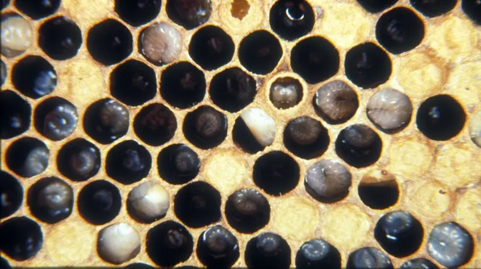

Notifiable brood disease
European Foulbrood (EFB) in the UK
Last updated: 1 May 2026

European foulbrood (EFB) is a serious bacterial brood disease of honey bees. It is caused by Melissococcus plutonius and usually affects young larvae before the cells are sealed.
Infected larvae may become twisted, slumped, yellowish or brown, and the brood pattern can start to look uneven or patchy. Because EFB is a notifiable disease in the UK, suspicious signs should not be ignored or treated as a normal brood problem.
This guide explains the main EFB signs, how it differs from American foulbrood, how it spreads and what UK beekeepers should do next.
Key signs of European foulbrood
European foulbrood often causes the brood nest to look patchy or uneven rather than forming a solid area of healthy brood. Infected larvae may appear twisted or unnaturally positioned within the cell, and can start turning yellowish, brown or melted-looking as the disease progresses.
Unlike American foulbrood, EFB usually affects larvae before the cells are sealed. Some uncapped larvae may look collapsed, slumped or abnormal, and in some colonies a sour or unpleasant smell may also be noticeable.
What does European foulbrood look like?
European foulbrood usually affects larvae before the cells are sealed. The larvae may appear twisted, slumped, discoloured or melted down in the cell. The brood nest may look irregular, with a patchy pattern rather than a solid area of healthy brood.
This can be confused with other brood problems, so do not rely on one sign alone.
How is EFB different from American foulbrood?
European foulbrood usually affects unsealed larvae. American foulbrood usually affects sealed brood and is more strongly associated with sunken, perforated cappings and ropy larval remains.
If you are unsure, compare this page with the guide to American foulbrood and the wider guide to foulbrood vs chalkbrood.
What causes European foulbrood?
European foulbrood is caused by the bacterium Melissococcus plutonius. It affects developing larvae and can spread between colonies through contaminated comb, equipment, drifting bees, robbing, or beekeeper handling.
What to do if you suspect EFB
- Close the hive carefully after inspection.
- Do not move colonies, frames, honey, supers or equipment from the apiary.
- Disinfect your hive tool, gloves and any equipment used.
- Contact the National Bee Unit or your local bee inspector immediately.
- Do not try to treat the colony yourself unless instructed by an inspector.
For more detail, read when to call a bee inspector.
What not to do
- Do not swap brood frames between colonies.
- Do not sell or give away equipment from the apiary.
- Do not shake bees into another hive without official advice.
- Do not delay reporting because the signs seem mild.
European Foulbrood FAQ
Yes. European foulbrood is a notifiable disease. If you suspect it, you should report it to the National Bee Unit or your local bee inspector immediately.
Control decisions should be made by the bee inspector. Depending on the case, official control may involve destruction, shook swarm procedures or other authorised measures.
No. A sour or unpleasant smell can occur, but the absence of smell does not rule out EFB.
Yes. EFB can be confused with chilled brood, sacbrood, poor queen pattern or other brood stress. Suspicious brood disease should be checked properly.
Image credits
Disease reference images on this page are courtesy of The Animal and Plant Health Agency (APHA), Crown Copyright.